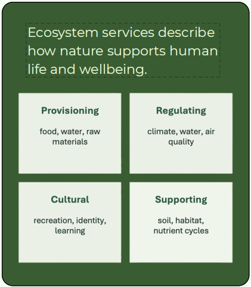
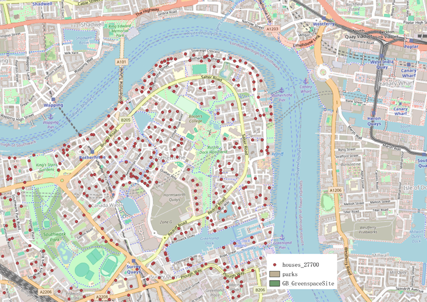
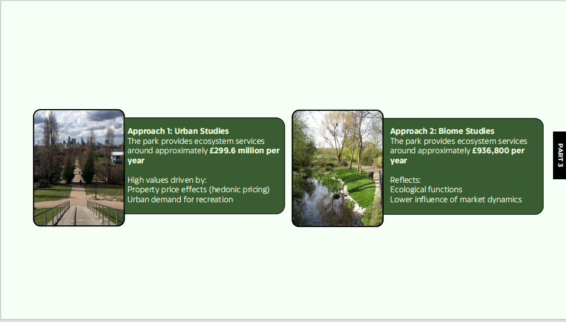
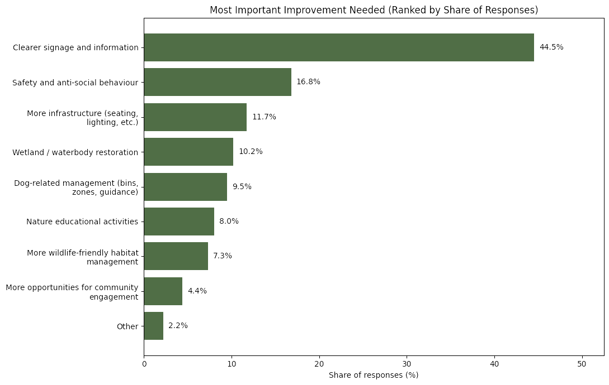

Why this matters here
Russia Dock Woodlands and Stave Hill are a high-use urban nature site with biodiversity, wellbeing, and education value. Management decisions involve real trade-offs: access versus disturbance, “tidy” versus wild, and short-term fixes versus long-term resilience.
Many of the site’s benefits behave like public goods. They matter deeply to local life, but often remain invisible in budgets, planning, and investment decisions. Valuation helps make these benefits easier to compare, discuss, and protect.
What are ecosystem services?
Ecosystem services describe how nature supports human life and wellbeing. In this case, the woodland and park do not only provide ecological functions, but also wider public benefits linked to health, learning, recreation, and local identity.
Provisioning
Food, water, biomass, and raw materials provided by natural systems.
Regulating
Climate regulation, water processes, air quality, and other functions that stabilise environments.
Cultural
Recreation, identity, learning, aesthetic experience, and everyday social meaning.
Supporting
Soil, habitat, nutrient cycles, and background ecological conditions that sustain the system.

Ecosystem service categories
The valuation framework treats ecosystem services as multiple and interconnected, rather than as a single environmental output.
Why valuation is needed
Many ecosystem services are public goods. Some, such as recreation, are easier to recognise because people experience them directly. Others, especially regulating services, are less visible, more long-term, and less likely to appear in market prices.
The presentation also stresses that ecosystems are natural capital, while ecosystem services are the flows of benefits people receive. Those benefits depend on interactions between natural, human, social, and built capital, not on nature alone.

Natural capital and human wellbeing
Service delivery depends on how ecological systems interact with institutions, knowledge, infrastructure, and everyday use.
Key idea: valuation does not invent new value. It makes already-existing ecological and social benefits more visible in policy and investment decisions.
How ecosystem value was measured
The project compares five approaches to valuation. Each method captures a different aspect of value and comes with different strengths and limitations.
Method 1: Hedonic pricing
Uses housing market data to estimate how much people are willing to pay to live near environmental quality.
Method 2: Holistic valuation
Treats the park as natural capital and uses surrounding land value as a proxy for broader ecosystem value.
Method 3: ESVD transfer
Uses standardised ecosystem service values from previous studies and matches them to mapped habitats.
Method 4: Benefit transfer
Compares urban-based and biome-based transfer routes to test how assumptions change estimated value.
Method 5: Willingness to pay
Uses survey responses to estimate how much local people would voluntarily contribute to support the park.
What the results show
Different methods produce very different estimates. This is not simply a problem of error. It reflects the fact that different approaches capture different dimensions of ecosystem value.
Hedonic pricing
- Properties within 500 metres sold for about 7.7% more than comparable properties further away.
- Average house price within 500 metres: £586,419.
- Number of nearby properties used: 732.
- Estimated capitalised ecosystem service value: £33 million.
Holistic valuation
- Total park area used: 13.18 hectares.
- Natural capital value estimate: £509,670,600.
- Estimated annual ecosystem service value: £25.5 million per year.
- Includes recreation, wellbeing, biodiversity habitat, climate regulation, and neighbourhood attractiveness.

Hedonic pricing study area
Housing transaction data and park locations were combined spatially to test the relationship between proximity and price.

Benefit transfer comparison
Urban-based and biome-based transfer routes produce sharply different values, showing how assumptions shape ecosystem valuation.
Benefit transfer results
- Urban studies approach: approximately £299.6 million per year.
- Biome studies approach: approximately £936,800 per year.
- Urban estimates are strongly influenced by property and recreation demand.
- Biome estimates focus more narrowly on ecological function.
Willingness to pay
- Total respondents: 74.
- Positive WTP responses: 51 (69%).
- Mean WTP: about £45 per person per year.
- Estimated annual local contribution: approximately £483,566 to £562,747.
What local people want improved
One of the strongest findings from the survey-based valuation work is that people are most willing to support visible and practical improvements.
Top priority
Clearer signage and information was the highest-ranked improvement need.
Safety
Safety and anti-social behaviour were a major concern, showing that environmental value also depends on public confidence.
Infrastructure
Seating, lighting, and other small-scale facilities matter for how people experience and support the site.
Ecological restoration
Wetland and waterbody restoration also appeared as a meaningful improvement priority.

Visible improvements and public support
The willingness-to-pay results suggest that local support is strongest when improvements are practical, legible, and clearly connected to everyday use.
Why the estimates differ
The methods do not answer exactly the same question. Some reflect market behaviour, some estimate broader stock value, some transfer values from comparable studies, and some capture stated local support for non-market goods.
Important takeaway: ecosystem value is not one fixed number. The different methods help reveal different layers of value, from local willingness to contribute to wider natural capital and urban amenity effects.
What this means in practice
For planning and policy
- Makes hidden trade-offs more visible.
- Shows the real cost of development when ecological value is otherwise treated as zero.
- Supports conservation funding, environmental taxes, and payment for ecosystem services approaches.
- Suggests that public goods may require new governance tools and institutions.
For community wellbeing
- Shows that economy, ecology, and social wellbeing are interdependent.
- Highlights how ecosystem degradation can disproportionately affect vulnerable groups.
- Supports nature-based solutions, often at lower cost than engineered alternatives.
- Strengthens public claims to protect shared green spaces.
Key takeaway
The main message is simple: Russia Dock Woodlands and Stave Hill Ecological Park create value that is ecological, social, and economic at the same time. Ecosystem valuation helps translate that wider public benefit into a language that can support better decisions, fairer funding, and stronger long-term stewardship.